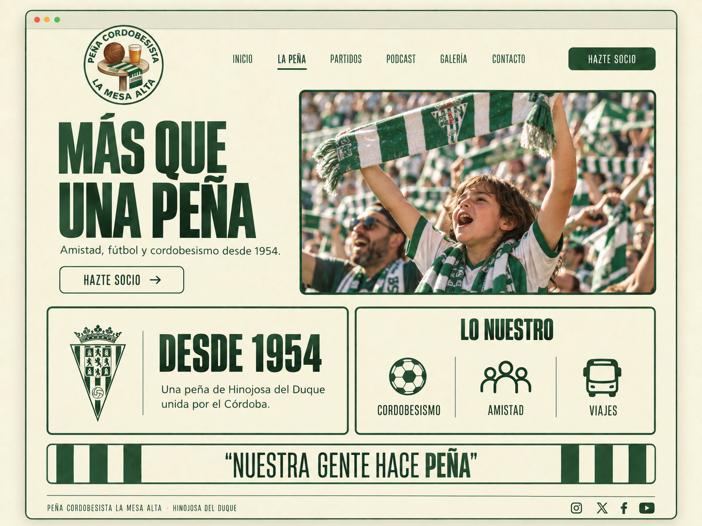

LA MESA ALTA · HINOJOSA DEL DUQUE
MÁS QUE UNA PEÑA.
LOS NUESTROS.
Nos une el Córdoba. Nos quedamos por la gente. La Mesa Alta es ese lugar donde una previa se convierte en una buena conversación y un viaje, en un recuerdo compartido.
Una forma de vivir el fútbol cerca de casa y de llevar nuestros colores allá donde juegue el equipo.
EN ESTA MESA CABES TÚ
UNOS COLORES.
UN SITIO PARA TI.
Si el Córdoba también es lo tuyo, ya tenemos algo en común. Ven a formar parte de La Mesa Alta.
ANTES DE APUNTARTE
¿Cómo puedo hacerme socio?+
El alta se tramita con la peña. Estamos preparando el canal de contacto para que puedas consultar la cuota y los pasos para unirte.
¿Puedo ir a los desplazamientos sin ser socio?+
Las condiciones para socios y no socios se indicarán en cada viaje, junto con el precio y las plazas disponibles.
¿Dónde está la peña?+
En Hinojosa del Duque, Córdoba. La dirección de la sede y los horarios de encuentro se publicarán cuando estén confirmados.